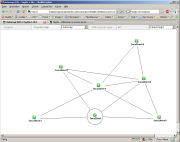

etc/automaps, but this has changed with NagVis 1.7.
The automap configuration files are created as regular map configurations (like described in
map configuration). To create an
automap in NagVis 1.7 you have to set the map source to automap. To do this, you need to add the sources parameter
to the global section and set its value to automap.
| Parameter | Default | Description |
|---|---|---|
| show | The name of the automap. Since NagVis 1.5 different automap configuration files can be defined. The automap to view needs to be set here. | |
| backend_id | default backend | The backend-id of the backend to fetch the objects from. For details see the [backend_*] section in the Main Configuration |
| root | see root object definition | This is the name of the root object. It is not essential to set the host here. There are some more ways to tell the root object. For details see the root object definition chapter on this page. |
| child_layers | 2 | Maximum layers of child hosts to be displayed. |
| parent_layers | 0 | Maximum layers of parent hosts to be displayed. |
| render_mode | undirected | Set the render mode of the map. For details see available render modes |
| width | 1024 | width of the automap in pixels |
| height | 786 | height of the automap in pixels |
| ignore_hosts | none | comma separated list of hosts (including children) not to display |
| filter_by_state | none | Set to 1 to enable the "problem automap" mode. When it is set to 1 it will exclude all branches which have only OK/UP hosts. This will result in a "problem automap" which only shows up a tree where each branch has at least one problem. |
| filter_by_id | Exclude specified object_ids, is mostly used internal (new in 1.7) | |
| filter_group | none | Provide a hostgroup name. Only hosts in this hostgroup will be shown on the map. |
| search | none | Search for a map object on map load. Matching objects will be highlighted. |
| rankdir | LR | Configure direction of directed automaps, can be set to TB (Top/Bottom) and LR (Left/Right) (new in 1.7) |
| rotation | none | Rotate in the given rotation pool when the map is a step in the pool. |
| header_menu | none | Enable/Disable the header menu. To be specified as integer (1/0). Overrides the configuration. |
| hover_menu | none | Enable/Disable the hover menus. To be specified as integer (1/0). Overrides the configuration. |
| context_menu | none | Enable/Disable the context menus. To be specified as integer (1/0). Overrides the configuration. |
| margin | 50 | Sets the free area on the border of the automap graph. Has to be specified in pixels. |
| overlap | true | Configure collision handling of objects (take a look at the graphviz docs for explanations of the values) (new in 1.7) |
root.defaultroot option can be set in the [automap] section.| Mode | Example image |
|---|---|
| directed | |
| undirected |  |
| radial | |
| circular | |
| undirected2 |
Since NagVis 1.5 it is possible to export the current automap view as a classic NagVis map. Exporting automaps to classic maps you get the advantages of both worlds.
You can start with the automap to get all the object positioned on your maps using the automap render modes. Once you finished the rendering you can export the automap including the generated background image to a regular map using the "Export to map" which can be found in the "Actions" submenu in your header menu.
Using the exported map you can add design elements as you like and customize your layout according to your needs.
A map can be exported multiple times to the same target map but it will overwrite all changes you made to the target map before. You can only overwrite maps you have edit permissions on.
A classic map can not be turned into an automap.
The URLs of the host objects are used for identifying the host objects during automap rendering. Especially the "host=" parameter is important. When this parameter is missing in the host URLs the object positions can not be gathered.
By default this information should not be of interest to you. But when you customize the host URLs in your NagVis installation it is important to know that your custom URL needs to have the "host=" parameter set to the hostname of the object to be able to use the hosts on the automap.